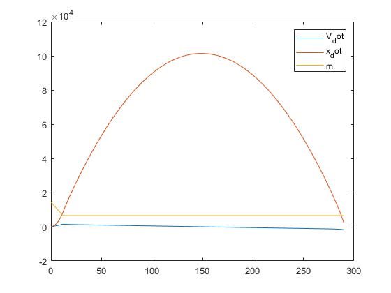

Contents
clc; clear all; close all;
global g R a1 expo Tsl T11 rho0 Vflow Pexit Aexit Me Te m0 mp m_dot dt;
Initial Conditions
g = 9.80665;
R = 287;
Rrocket = 8.314/(24/1000);
a1 = -0.0065;
expo = -g/(a1*R);
Tsl = 288.16;
T11 = 216.66;
rho0 = 1.225;
Hmax = 100000;
deltaV = 1700;
psl = 101320;
a = -.00065;
tStep = 1;
dt = tStep;
tend = 290;
tspan=0:tStep:tend;
gamma = 1.4;
gammarocket = 1.3;
V0 = 0;
Bread
Me = 2;
Aexit = 1.25;
T0 = 3800;
Hdesign = 0;
Pexit = press(Hdesign);
Mpay = 300;
[mach, ToverT0, PoverP0, RhooverRho0, AoverAstar] = flowisentropic(gammarocket, Me);
combustion_stag_pressure = Pexit/PoverP0;
chamber_pressure = (PoverP0*combustion_stag_pressure)/101325
Pt= 0.5457*combustion_stag_pressure;
Te = ToverT0*T0;
m0=Mpay/0.02;
Vflow = Me*sqrt(gammarocket*Rrocket*Te);
MpoverM0 = 1-exp(-deltaV/Vflow);
mp = MpoverM0*m0;
Mstructural = m0-mp-Mpay;
Mf = Mstructural+Mpay;
At = Aexit/AoverAstar;
m_dot = Vflow*(RhooverRho0*rho0)*Aexit;
m0 = Mstructural+Mpay;
minitial = m0+mp;
initial_conditions = [V0;0;minitial];
pburn = press(6515.65);
pap = press(100160);
chamber_pressure =
1
Butter
integrand = initial_conditions;
for m1 = 1:numel(tspan)
integrand = rk4_step(integrand);
prediction(:,m1) = integrand;
end
plot(tspan,prediction)
apogee = max(prediction(2,:))
error = (Hmax/apogee);
legend(["V_dot" "x_dot" "m"])
ODE
function x_t = f_x(x_t)
global g Vflow Aexit Pexit m0 m_dot mp;
V = x_t(1);
rho = dens(x_t(2));
m = x_t(3);
x_dot = V;
C_d = .3;
w = m*9.81;
if m <= m0
dm = 0;
m_dot = 0;
mp = 0;
Pexit = 0;
b0=0;
else
b0=1;
end
T = m_dot*Vflow + ((Pexit-press(x_t(2)))*Aexit*b0);
V_dot = -g-(.5*rho*C_d*(Aexit*1.2)*(V^2))/m + (T/m);
x_t = [V_dot;x_dot;-m_dot];
end
function x_tplus_dt = rk4_step(x_t)
global dt
k1 = dt* f_x(x_t);
k2 = dt* f_x(x_t + (1/2)*k1);
k3 = dt* f_x(x_t + (1/2)*k2);
k4 = dt* f_x(x_t + k3);
x_tplus_dt = x_t + (1/6)*k1 + (1/3)*k2 + (1/3)*k3 + (1/6)*k4;
end
apogee =
1.0140e+05

Atmospheric Parameters
function T = temp(h)
global a1 Tsl
T = Tsl-a1.*h;
end
function rho = dens(h)
R = 8.3144598;
M = .0289644;
g = 9.80665;
if(h<11000)
rho0 = 1.225;
T0 = 288.15;
h0=0;
elseif(h<20000)
rho0 = .36391;
T0 = 216.65;
h0=11000;
elseif(h<32000)
rho0 = .08803;
T0 = 216.65;
h0=20000;
elseif(h<47000)
rho0 = .01322;
T0 = 228.65;
h0=32000;
elseif(h<51000)
rho0 = .00143;
T0 = 270.65;
h0=47000;
elseif(h<71000)
rho0 = .00086;
T0 = 270.65;
h0=51000;
else
rho0 = .000064;
T0 = 214.65;
h0=71000;
end
rho = rho0*exp((-g*M*(h-h0))/(R*T0));
end
function P = press(h)
R = 8.3144598;
M = .0289644;
g = 9.80665;
if(h<11000)
P0 = 101325;
T0 = 288.15;
h0=0;
elseif(h<20000)
P0 = 22632.10;
T0 = 216.65;
h0=11000;
elseif(h<32000)
P0 = 5474.89;
T0 = 216.65;
h0=20000;
elseif(h<47000)
P0 = 868.02;
T0 = 228.65;
h0=32000;
elseif(h<51000)
P0 = 110.91;
T0 = 270.65;
h0=47000;
elseif(h<71000)
P0 = 66.94;
T0 = 270.65;
h0=51000;
else
P0 = 3.96;
T0 = 214.65;
h0=71000;
end
P = P0*exp((-g*M*(h-h0))/(R*T0));
end